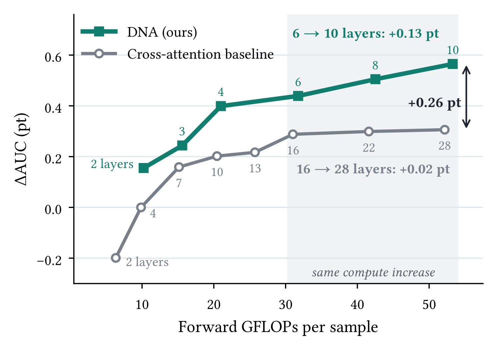
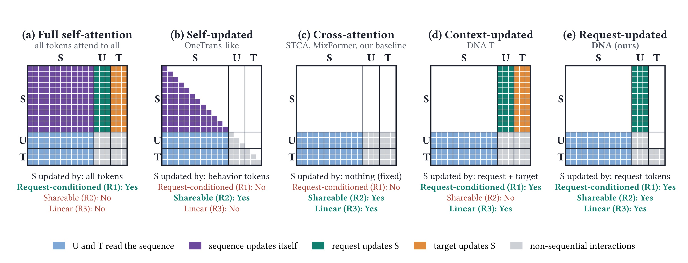
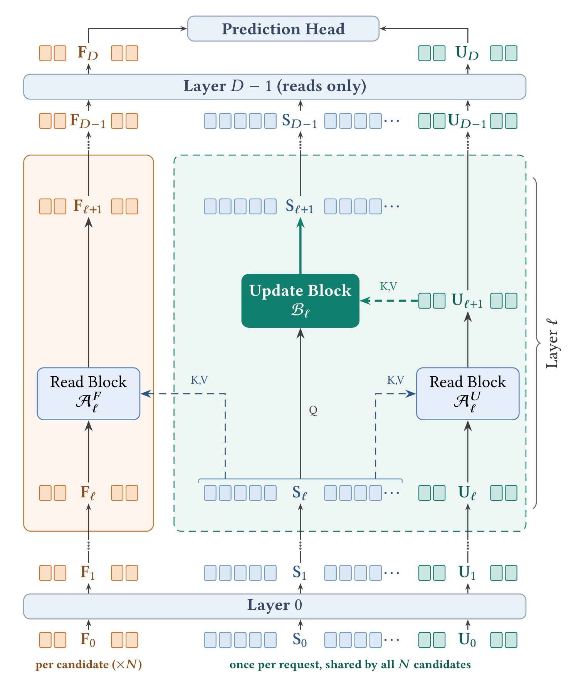
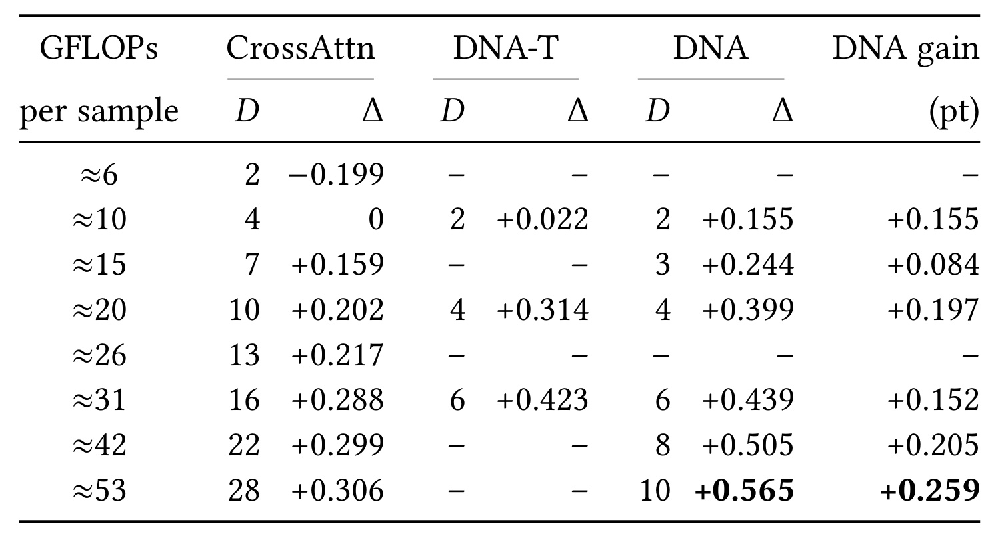
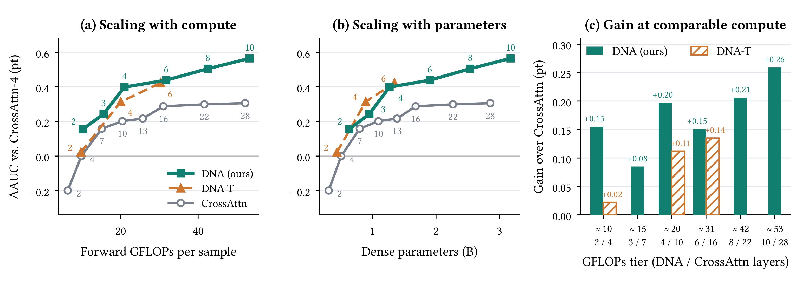
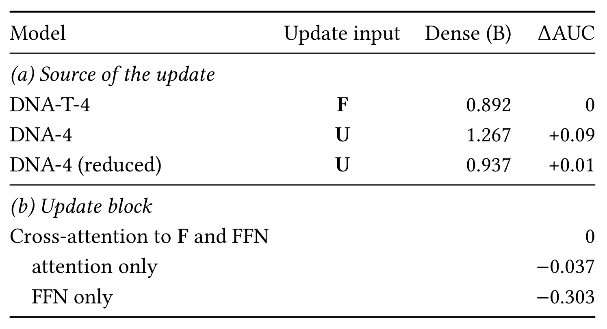
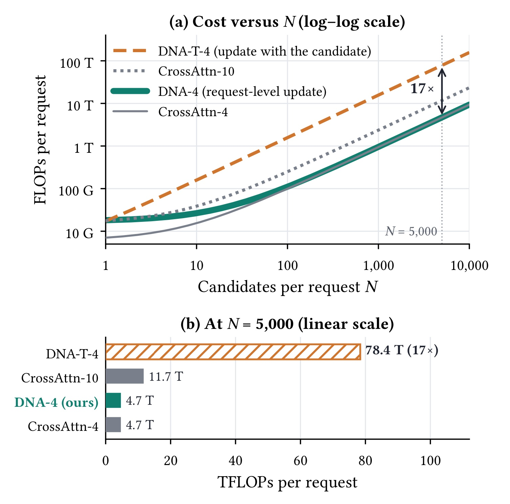
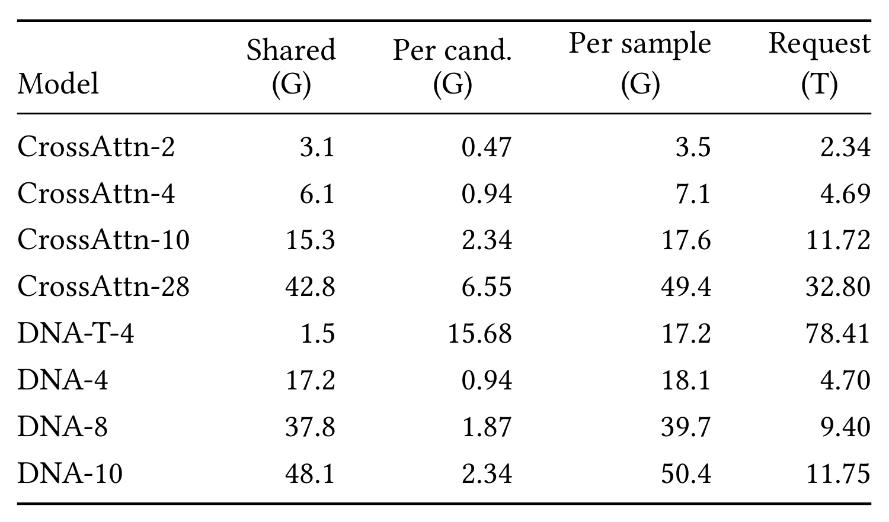

DNA: Unlocking Depth Scaling in CTR Models｜淘宝搜索如何让长历史随排序深度更新
阿里巴巴的 Caiyuan Li、Wenjie Wu、Yuheng Huang 等研究搜索点击率模型如何把更多计算花在用户历史上。作者提出 Dual-stream Nexus Attention（DNA），让请求和历史在相邻层之间双向交换信息，同时保留候选独立打分。论文 v1 于北京时间 2026 年 11 月 19 日 15:40 提交，列入 arXiv 11 月 20 日公告，本站于北京时间 11 月 23 日查阅。未核验到论文专属公开代码。arXiv:2611.25659
交叉注意力让工业排序可以在线读取长用户行为序列，但仅增加读取层数的收益会逐渐变小。淘宝搜索中，固定行为序列的交叉注意力从十六层增加到二十八层，AUC 只提高约 0.02 个百分点。每层都从同一份行为序列投影键值，新增深度带来更多次读取，行为状态本身始终没有收到当前请求的信息。
1. 背景和问题
同一用户在淘宝搜索「跑步长裤」和「水杯」时，能够共享点击、购买和展示等历史底稿，排序模型却需要根据当下需求从中提取不同信息。此前点击过跑鞋的事件在第一条搜索里可能关联运动场景，在第二条搜索里还可能成为运动水壶的兴趣来源，其实际意义取决于当前查询、用户画像和业务场景的组合。精排一条请求还可能收到数千个候选，不同价位、品牌或品类需要不同分数。模型因此有两个不同粒度的条件变量。一组来自同一请求内共同的搜索与用户特征，一组来自每件商品的内容与上下文。把哪组变量传给历史编码，会直接改变它可以在哪个阶段执行、结果可以被谁复用，以及每增加一件候选要重复多少计算。
以 DIN、SIM 和 TWIN 为代表的候选注意力路线，通常让包含目标商品信息的短查询去读取历史，部分方案先从超长行为中检出较小的子集再算权重。STCA 和 MixFormer 等方法把这种读取堆到多层，每层都能得到新的候选表示。常用实现按层学习键值投影，同一个历史事件对不同层可以有不同的数值向量，然而每次投影的输入仍来自同一行为状态。候选在第二层可以根据第一层读到的信息调整查询，在更深层仍只能向原历史索取值。该结构已经具备针对候选的选择能力，本文增加的能力是在存储历史的这一侧也建立层间状态。论文把两条扩展路径分开讨论：一条增加对已有历史的读取次数，另一条让历史吸收请求或其他历史的信息后再供下一层读取。这个区分解释了为何有不同的每层键值权重，并不能说明历史已经形成跨层的上下文表示。

Figure 1 把差异放在相近的单样本前向预算内。横轴是每个样本的 GFLOPs，纵轴是相对四层 CrossAttn 的 AUC 百分点变化，数字是各自架构的实际层数。两条曲线在灰色区间消耗相近的额外计算预算，灰线从十六层到二十八层，绿线从六层到十层。灰线增量约 0.02 个百分点，绿线多获得约 0.13 个百分点。左侧四层基线位于零点反映了相对坐标，二层基线的负值是相对差分。右端另标出约 0.26 个百分点，量的是两种模型最终预算档之间的差距，与绿线自身增量有不同分母。本文将这组曲线作为进一步分析键值侧的动机。层数和预算同时变化时，只看这张曲线无法排除参数形态和新增模块的贡献。后面的同档配对、近似同参数对照和拆除组件，分别承担不同的验证任务。
如果历史必须接收新信息，一种自然办法是在历史内部做自注意力。HSTU、OneTrans 类因果编码器中，事件能沿着时间方向访问早先的行为。作为论文设计空间里的抽象，给定全长历史，显式行为对数会随长度平方增长。生产系统可以用稀疏、裁剪、缓存等手段控制成本，作者讨论的是它们未加优化的注意力结构。另一项限制来自 token 排序。为了让所有组共享一个因果掩码，可能要将多个时间跨度、不同字段的点击和购买序列做全局时间归并，或拼成带分隔符的序列。论文引用 OneTrans 在两种排序规则之间报告过 AUC 差异，说明对组的编排本身也能影响建模。本文每组保留原投影与事件位置，组之间通过请求侧交换信息，允许不同历史各自使用原字段和排序。
全自注意力允许行为接收候选信息，不过候选变动会改变同一历史位置的表示，多商品排序时就需要为各候选重算。如果历史只读取候选和请求组成的短 token，复杂度可以压回线性，但计算共享仍受输入依赖限制。文中把后一种方式作为 DNA-T 对照，并用它对应部分上下文化做法。面向大量候选，作者选择只让历史读取请求侧。候选仍能用自己的查询读请求条件化后的历史，其商品特征仍进入候选专属表示与点击头。共享的对象是历史状态和两套注意力的历史键值，依赖当前查询，所以自然边界是一次请求。

Figure 2 的每个矩阵按「列提供信息、行接收信息」阅读，横纵都区分行为序列 $S$、请求特征 $U$、候选特征 $T$。蓝色格表示短侧读取行为，紫色表示历史内部交换，青色和橙色分别表示请求、候选给历史提供信息。第一个方案几乎所有块都打开，历史响应请求的同时也响应候选。第二个方案把序列内部形状画成因果三角，从结构上约束哪些历史位置可读。第三个方案的历史行没有接收信息，因此候选选择可以改变读出，第二层行为向量的输入依然固定。第四个矩阵用请求加候选的短侧更新历史，保留线性成本，但橙色依赖让序列对每件候选不同。第五个矩阵的历史行只连接请求列，在保留左下读取通路的同时满足当前请求条件、候选间共享与固定短侧宽度下的线性复杂度。这里的“线性”基于组数、隐藏维和请求 token 数固定，图中的绿色区域没有承诺跨请求缓存或低尾延迟。
对推荐/搜索链路而言，论文的任务是点击排序每个请求—候选对。它复用此前曝光日志中的点击标签来训练，改变的是候选读取历史前的历史状态和请求上下文。作者没有把更新当成一个新建的召回分支，也没有改变线上候选供给来证明训练收益。即使新版本可以把用户历史中的跑鞋事件更贴合当下搜索地编码，候选列表中不存在合适商品时，排序模型也无法靠改历史补出物品。设计在请求侧聚合共享信息，同时保留逐候选查询。关键验收是相同任务、数据和候选下，深度的新增收益是否来自有效的序列上下文，以及这份上下文能否在真实入口按请求只生成一次。
2. 方法
2.1 总览与读取块
设 $G$ 组行为各有自己的特征投影、历史长度和时间窗。每组投影为同维 token，保留各自边界和原次序，再以统一长度轴交给注意力。行为总长 $L=\sum_{g=1}^{G}L_g$，各组填充有独立可用性标记。非序列侧把请求与候选特征一起分组构造成 $F_0$，另用相同形式的 tokenizer 将搜索词、用户、场景等请求级特征构造成 $U_0$。两路 token 数 $m_F,m_U$ 设置独立，无需逐一对齐。每个候选都有自己的 $F_0$，同一请求内的 $U_0,S_0$ 共同。Figure 3 展开了这种数据依赖，包含两次从历史取值和一次反向更新。

Figure 3 从下往上追踪第 $l$ 层。左边橙框会对候选重复，右边青框统管一次请求内的历史和请求表示。入层的 $S_l$ 向两个读取块送相同的键值。左侧将候选自己的 $F_l$ 变成 $F_{l+1}$，右边从 $U_l$ 读出 $U_{l+1}$。右边得到的新请求状态转而被更新块投成短键值，在中间以每个 $S_l$ token 发出的查询回写行为。由于没有从左框回到共享框的箭头，第一层两个候选即使读出相距很大的表示，第二层仍可以共用更新过的历史。图顶最后一层没有中间绿块，预测头接收 $F_D$ 和 $U_D$。这个双出口让共享分支具备两条影响点击监督的路径，即直接进头与间接改变后续各层历史。中间的垂直放大区是一个层的细节，底部和顶部则示意堆叠位置，读图时不应把这些重复标注数成额外的层。和只读取原历史的结构相比，新增的请求分支既承担跨组的信息缓冲，又给末端打分增加了共享特征。
原文式（1）给出了固定历史基线，式（2）至（4）给出了两个读取块的查询和它们共用的历史键值。可以将候选和请求读的查询定义写成同一个索引形式。
符号解释 $A_l^F$ 是处理候选分支的读取块，$a$ 选择候选 $F$ 或请求 $U$，各自对当前状态做层归一化和查询投影。$s_{l,j}$ 是第 $l$ 层组内某一位置的行为状态，$g(j)$ 指这个位置所属的行为组。$W^K,W^V$ 按组和层选取，在同组位置共享参数，而 $K_{l,j},V_{l,j}$ 的数值随各行为输入变化。基线每层可以用不同 $W$，式子仍以未更新的 $S_0$ 为参数。DNA 的两路读取共享同一层的 $K_l,V_l$，它们拥有独立的查询、输出投影与前馈，因此对同一位置分配的注意力权重仍可不同。
符号解释 $P_l^a$ 是每个注意力头上短查询对长历史位置的分布，形状为 $m_a\times L$，$\widetilde Q,\widetilde K$ 表示经 QKNorm 的查询和键，$d_h$ 是单头宽度，$b_{\rm pad}$ 屏蔽无效历史。按历史位置求 softmax 后加权每头的 $V_l$，拼接各头并经输出投影，再加回未经改写的短侧残差。$\operatorname{FFN}_l^a$ 是每个短 token 自己的 SwiGLU 前馈，接受第一次残差并再加一条残差。候选对历史的读取仍和原精排任务一样是逐候选的。请求的读取则通过同一张键值表把多个行为组纳入一个 $U_{l+1}$，为更新块提供同时包含当前搜索与全组读取结果的短输入。
2.2 更新块
更新阶段交换两个方向。在式（7）至（9）中，每个位置的行为自己发查询，已读过本层历史的请求状态提供短键值。请求到键和值的映射分别对拼接后的请求 token 做复合投影，一个输出 token 可用到每个输入 token。多组行为的查询和更新后前馈仍由组别选择，组标签与位置标记跟随 $S$ 进入下一层，不需要把所有行为压成单个兴趣向量。
符号解释 $Q^S_{l,j}$ 是单个行为位置投影出的查询，$K^U_l,V^U_l$ 各有 $m_U$ 个位置，按当前层请求输出投影。$P_l^B$ 形状为 $L\times m_U$，归一化轴从读取块的历史位置转到请求 token。请求虽然相同，不同行为的 $Q^S$ 仍会选取不同的请求上下文混合。复合投影扩展了某个输出键值纳入的上下文，训练参数也随之上升。原文的 reduced 对照将这一操作换成逐 token 投影，用同样的更新信息源试探更小的更新块，不能把其参数变化理解为缩短历史。
符号解释 $S'_l$ 把反向注意力读出的请求信息加到已有行为状态上，$W^B_{l,O}$ 是更新输出投影，$\operatorname{FFN}^B$ 给行为组分配各自的 SwiGLU 权重，$\mathbf 1_{\rm valid}$ 在更新末尾重新置零填充位置，$\odot$ 是逐位乘。反向读取使用已更新的 $U_{l+1}$，这使得某组购买事件先改变请求状态，再由另一组点击事件选择是否吸收该状态。它建立的跨行为路径以少量请求 token 为中介，能够建模多组之间的上下文，同时给细粒度历史交互留下容量约束。若 $m_U$ 过少或一组长历史系统性淹没其他组，维持全长 token 并不能保证每个有效事件已通过共享请求影响另一条事件。
2.3 层间调度与请求内共享
完整模型先计算 $F_{l+1}$ 和 $U_{l+1}$，仅前 $D-1$ 层回写历史。写成原文式（12）和式（13）的操作顺序如下。
符号解释 $D$ 按候选分支的读取层数计数，$A_l^U$ 是请求自己的读取块，$B_l$ 表示上一小节的反向更新。方括号中的分号表示沿 token 轴拼接，随后对 $m_F+m_U$ 个位置求一次均值，$\operatorname{MLP}$ 和 sigmoid 得到点击预测 $\widehat y$。$D=2$ 时先读 $S_0$，得到 $U_1$ 后才生成 $S_1$，两个末层读取共同消费 $S_1$。$S_D$ 没有下游读取，故末层省掉回写。训练按请求—候选样本将 $\widehat y$ 与观测点击作二元交叉熵，梯度沿两路预测表示和回写链路传播。推理省去反传，前向的顺序及依赖不变，可以先算完请求分支各层并保留历史键值，再批量算候选分支。
归纳关系要求共享输入中没有从候选端进入的特征。由共同的 $S_0,U_0$ 可知 $U_1,S_1$ 不因候选改变，随后每层重复成立。部署若把商品相关变量混进 $U_0$ 便会破坏整个证明，改变聚合和 gather 时机也必须维持同一请求映射。DNA-T 按原文让 $F_l$ 给更新块提供键值，即 $S_{l+1}=B_l(S_l,F_l)$，自身预测头使用 $F_D$。这与 DNA 令已读历史的 $U_{l+1}$ 回写不同，输入粒度、投影架构和更新所见状态时点共同变化，后续实验对两者的差值不能当作单因素删除候选的精确估计。这个候选感知版本从第一回写起对每个商品产生不同历史，但其 $S_0$ 仍可以预先投影一次供候选共享。
2.4 复杂度与服务成本
服务成本按一次请求与每件新增候选拆成两项。用论文的 $c_{\rm KV}$ 表示对历史投影一层键值，用 $c_A(m),c_B(m)$ 分别计从历史读取与向历史回写一层的剩余运算。
符号解释 $N$ 是同一请求的候选数，$C_{\rm req}$ 只发生一次，$C_{\rm cand}$ 随候选数累加。$c_{\rm KV}$ 随 $Ld^2$ 增加，$c_A$ 的注意力项是 $O(mLd)$，其他查询/输出投影及前馈主要按短侧 token 数运算。$c_B$ 也有 $O(mLd)$ 注意力运算，由于长序列每个位置都是输出对象，还额外付出规模约为 $O(Ld^2+Ld h_S)$ 的长序列投影和前馈，$h_S$ 是序列前馈中间宽度。固定宽度与短侧长度时两者线性依赖 $L$。同深度比较，DNA 让增量停在 $C_{\rm req}$，DNA-T 则将每次回写及其下层键值投影加进 $C_{\rm cand}$。论文提及候选查询可以合并成一批注意力，但每层 KV 存多久、对齐和复用能否在具体运行时实现，以及额外请求串行阶段的关键路径，仍取决于部署算子和请求分布。
3. 实验结果
3.1 数据与基线控制
作者使用淘宝搜索曝光日志训练，以随后一天的日志评估。输入来自多组用户行为，合计填充长度在千 token 量级。稀疏嵌入从共同 checkpoint 起步，稠密参数从头训练。各版本沿用 HHFT 特征 tokenizer、token 准备层、相同训练配方及共同底座和预测头类型。底座包含一层 Transformer 和一层 Hiformer，作用于非序列侧。所有注意力块的宽度为 512、使用八头、预归一化和 QKNorm。不同模型按自己的输出流组织预测头输入，例如 DNA-T 的前向只有候选末层输出，DNA 拼上共享请求末层表示。有公共预测头架构不等于头的输入完全相同。论文没有披露样本量、曝光位置分布、用户 ID 切分细节或绝对 AUC，也未提供随机种子离散度。结果能定位这组实施中的架构差分，不能直接估计相邻 AUC 点差的噪声下限。
AUC 使用 $100(\mathrm{AUC}-\mathrm{AUC}_{\rm ref})$ 报告百分点，0.26 个百分点约等于原始 AUC 单位 0.0026。参数量只统计稠密权重，不包括共同的稀疏嵌入表。FLOPs 统计主要矩阵乘，把一次乘加计为两次浮点运算。样本级预算描述训练/单样本前向比较中的模型计算，论文后面另给了仅针对读写块、纳入共享后的请求级成本。这里对历史的结构比较是监督点击二分类，后续在线指标则来自不同的结局变量和实际曝光流量。
3.2 深度与预算

Table 1 把 CrossAttn-4 设为零点。约 10、15、20、31、42、53 GFLOPs 六档里，DNA 深度分别为 2、3、4、6、8、10，配对的 CrossAttn 深度是 4、7、10、16、22、28。DNA 的逐档增量为 0.155、0.084、0.197、0.152、0.205、0.259 个百分点，全部为正，变化并非随着预算单调上升。约 6 和 26 GFLOPs 处只有 CrossAttn-2 和 CrossAttn-13，补充了灰色曲线的形状；它们没有落在两架构的同计算档配对里。约 31 这一档把固定历史从四层的基准增至十六层，达 0.288 个百分点；到约 53 档再堆十二层，仅到 0.306。同期 DNA 从 0.439 到 0.565，体现了更陡的后半段。最右列是对同档基线的直接差分，约 15 和 31 档的个别显示值与先将两列各自取三位小数再相减相差 0.001 个百分点，引用以作者最右列为准。DNA-T 仅有三个配对档，空白单元不能转作零增益或完整消融组。

Figure 4 左图画每个模型的单样本 FLOPs 与相对 AUC，中图把横轴换成稠密参数量，右图从各计算档取出相对 CrossAttn 的增量。左图强调绿线在高预算仍有斜率，也显示 DNA-T 在有测量的档位处于两条线附近。中图回答参数约束不同的问题：DNA-4 在约 20 GFLOPs 下用 1.267B 参数，CrossAttn-10 用 1.093B，所以该差异不可能视为同参数比较；到 DNA-8 与 CrossAttn-28 的实例，前者则在少约 11% 稠密参数和少约 18.5% FLOPs 时领先约 0.20 个百分点。右图底部同时标了两种层数，再确认各柱对应的是同预算、不同深度的配对，橙色只覆盖 DNA-T 做了对照的三档。这里的点是训练完的不同架构，连接线是帮助阅读，区间中间没有观测点，也没有置信带。
以相等深度比较，DNA-2 对 CrossAttn-2 高约 0.35 个百分点，DNA-4 对 CrossAttn-4 高约 0.40，DNA-10 对 CrossAttn-10 高约 0.36。这组比较大致固定候选读取块数，允许 DNA 开销多出请求读与历史回写。用相等单样本 FLOPs 对照时，DNA 一层比固定历史读取更重，所以二层能对四层，十层能对二十八层。两个对照因而回答不同问题：前者在固定候选边际成本的情况下看增设共享路径带来的变化，后者看总前向预算的分配。作者还指出 DNA-4 在约 40% 的离线前向 FLOPs 下超过 CrossAttn-28 约 0.09 个百分点，这个计算比率与后续五千候选时的 4.70 对 32.80 不是同一个问题。需要同时保留「维持深度仍有边际收益」和「高候选数量时可摊薄请求开销」两个证据链条。
3.3 更新来源与组件消融

Table 2 分成两组，零点各是本组首行。第一组固定四层，DNA-T-4 用候选相关 $F$ 回写、有 0.892B 稠密参数。完整 DNA-4 用 $U$ 回写、有 1.267B，AUC 增 0.09 个百分点。两者都有回写，后者还有每层额外的请求读及预测路径。作者将 DNA-4 更新块里的复合键值投影换成逐 token 投影得到 0.937B 参数版本，领先 0.01 个百分点。这个结果表示采用近似参数预算时可以保留相当的点击排名表现，不能识别候选删除、路径时刻和投影各自的独立影响；0.01 的统计波动也无从验证。第二组在 DNA-T-4 上测交叉注意力和 FFN。保留注意力、去掉 FFN 下降 0.037 个百分点；只保留 FFN、去掉注意力下降 0.303 个百分点。由于比较是在候选版本的更新块上完成，支持跨侧交互为该组差异的主要来源，还不能说明请求版可直接把 FFN 删除或将同一损失估计转移过去。表内两个分组使用不同参照，不能把它们的差分串联。
Table 1 中三档 DNA 对 DNA-T 领先约 0.13、0.09 和 0.02 个百分点，分别对应同档两层、四层、六层的两种更新。现有证据足以说明作者在测试的请求输入上没有看到必须给回写直接供应候选特征的收益。当前查询能代替多少候选特异信息，仍可能依赖候选集合的语义跨度。当召回结果在多个互斥意图间分散，或排序重点由活动库存、价格、时效等候选特征决定时，需要观察共享分支和候选读各自承担的粒度。论文没有给出按查询歧义、历史稀疏、商品类目和候选多样性分组的结果，因此这类条件是待检验的外推场景。
3.4 候选数、估算成本与在线效果

Figure 5 上图的横纵轴都用对数刻度。纵向靠近时表示比例接近，大候选区间中的绿线与四层灰线几乎重合，是因为两者按候选递增的斜率相同。在候选数很少时，绿线出现较高起点，可从请求读取和回写解释。十层交叉注意力在较小候选数量的差距有限，随着每件新增商品都重复十层读取，灰色点线逐渐越出四层 DNA。橙色候选感知版本每件商品还要回写历史并重建后续键值，因此大候选区域的开销远高于绿线。下图换到线性坐标固定 $N=5000$，把 DNA-4 与 CrossAttn-4 的数值都四舍五入到 4.7 T，CrossAttn-10 约 11.7 T，DNA-T-4 约 78.4 T，对绿线约 17 倍。纵轴和条长是运算量估算，图没有测设备执行、显存占用、排队或候选数分布。高候选场景中两条开销线贴合，也没有给出两条在线延迟曲线。

Table 3 首三列用 GFLOPs，最后一列用 TFLOPs，且各列各自取整。DNA-4 共享 17.2 G、每候选 0.94 G、单样本约 18.1 G。CrossAttn-4 的共享项约 6.1 G，候选项同为 0.94 G，因而多出来的约 11.1 G 可随五千候选分摊，整请求 4.70 T 对 4.69 T。用列出的每候选四舍五入数字乘五千，可能与作者请求列差约几个或几十 GFLOPs，应读取最后一列。CrossAttn-2 作为实际生产控制仅 2.34 T。若问换上 DNA-4 后按表估计的开销，五千候选时应首先看 4.70 对 2.34，约两倍块 FLOPs。4.70 对 4.69 是另一个同候选斜率的参照。另一个有代表性的配对是 DNA-10 对 CrossAttn-10 的 11.75 T 对 11.72 T，而对 CrossAttn-28 的 32.80 T，前者约为其 36%。表注还说明 tokenizer、底座与预测头合计约 2.8 GFLOPs 每样本，均排除在块级成本表之外。共享状态的显存大小、访存代价和设备利用率各有自己的约束。
论文第 5 节称 DNA-4 已部署到淘宝搜索。请求阶段先构造 $U_0$，计算请求分支和各层键值；候选阶段可以用一次批化注意力处理同层 $Nm_F$ 个 query，但每个商品各有权重和输出。按原文的依赖，处理同用户的新请求要再次构造请求条件化历史。原有行为获取和不依赖当前请求的初始投影是否可缓存，是另一项系统问题。线上 A/B 的控制是 CrossAttn-2；对应离线 DNA-4 高 0.60 个 AUC 百分点，线上报告 CTR 相对提高 0.8%、GMV 相对提高 0.5%。原文也给出对四层版本约 0.40 个离线 AUC 百分点的差异，四层对照没有单独的线上效果。作者没有给出线上流量、分桶单位、样本量、试验时长、置信区间、GPU 预算或服务延迟分位数，无法用它反推吞吐水平。线下点击排序指标验证曝光日志上的模型区分度，线上点击与成交额度量新策略作用到用户与商品后发生了怎样的结果变化，三种量各有自己的分母。
4. 总结
4.1 技术判断
DNA 把候选注意力中的两个职责拆开。候选分支仍决定某个商品如何读取历史，请求分支则充当历史各组之间的上下文中介。第 $l$ 层请求先从旧历史得到 $U_{l+1}$，历史再把这个状态吸收进 $S_{l+1}$，上述状态在下一层同时交给请求和全部候选。这样增加的深度既改变选择历史的查询，也改变历史可提供的值。论文在六个大致同 FLOPs 档上都给出正向 AUC 差，并以组件消融支持行为读短侧上下文的重要性。线上实验提供对实际两层生产基线的正向用户/业务观测，计算分解说明了候选共享的预期成本形状。
4.2 证据边界
- 数据是淘宝搜索曝光及次日切分，绝对 AUC、跨天重复和分层样本量未披露。最接近同参数的 0.01 个百分点差缺少置信区间。
- 消融主要对候选感知版本做组件移除。完整和缩减 DNA 对比 DNA-T 时，复合投影、请求支路、预测输入、回写所读状态的时点也不同。
- 请求作中介的跨历史交互表达能力受短侧 token 数与模型宽度限制。保留每个原历史位置有助于事件级选择，仍应在极长历史和短侧承载压力上分别测试。
- FLOPs 是读写块估算。请求共享依赖实际传入特征遵守请求粒度，也依赖服务端正确复用多层 KV。候选量变化、历史长度长尾和设备访存都会改变实测延迟。
- 线上 CTR 与 GMV 对照采用两层生产模型。试验没有披露同四层成本基线的在线比较，也没有足够分桶资料评估增量的方差、时段一致性和资源代价。
4.3 可以独立验证的三组比较
- 从同一次曝光日志保留候选集合、行为快照、稀疏起点和点击标签。并排训练候选键值固定、请求状态回写与候选状态回写三组，增加只改变请求投影方式且控制参数预算的配对，沿天报告 AUC、点击校准及不同请求类型的相对差。
- 用同一个请求下的两个候选及相同用户发出的两个不同查询做张量回放。逐层验证第一对候选的 $S_l$、$U_l$、共享键值应相同，同时其候选 $F_l$ 和分数能不同。第二对请求可共享初始历史，首次回写以后应能随查询而改变。填充组、空组与跨组掩码单独覆盖。
- 逐层标记请求读、序列回写、键值投影、候选读和预测头。按候选数、历史长度、并发和设备形态分桶，分别看共享状态显存、算子运行时间、端到端分位数及与原两层生产版本的差异。这样可判断公共计算是否确实只跑一次，及其何时会成为少候选场景的关键路径。
三组验证可以分别回答历史表征是否改善点击排序、候选间共享是否实际正确，以及共享得到的节省能否抵消新增长序列变换。在线指标还需要在明确分流与数据窗口后独立复核。